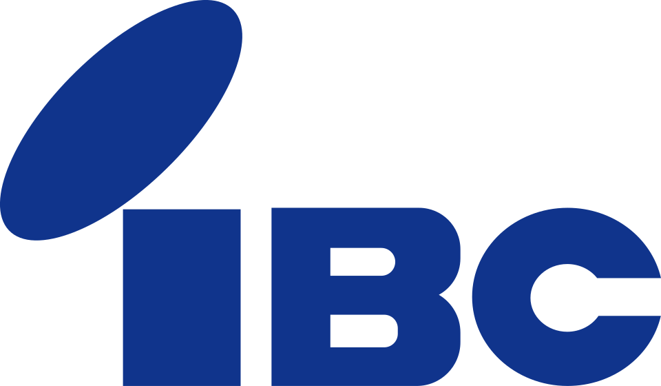

홈 > 브랜드 매거진 > Iwate Broadcasting Company
Iwate Broadcasting Company
IBC이와테방송(岩手放送)은 일본 이와테현의 지역 방송사다. 1985년 코퍼레이트 아이덴티티를 도입했으며, 무인양품(MUJI)의 초대 아트 디렉터이자 세이부·세종 계열 작업으로 알려진 그래픽 디자이너 다나카 잇코(田中一光)가 제작을 맡았다.
산업 분야 브랜드·비즈니스 · 공개 등급 편집 검수 · 브랜드 평가 4 ★

한눈에 보는 브랜드
IBC이와테방송(岩手放送)은 일본 이와테현의 지역 방송사다. 1985년 코퍼레이트 아이덴티티를 도입했으며, 무인양품(MUJI)의 초대 아트 디렉터이자 세이부·세종 계열 작업으로 알려진 그래픽 디자이너 다나카 잇코(田中一光)가 제작을 맡았다.
브랜드 관점
IBC 이와테방송의 정체성은 이와테현이라는 지역 토대 위에 세워졌다. 1953년 라디오 개국 당시 콜사인 JODF는 현재 텔레비전 디지털 송신(JODF-DTV)까지 이어져 70여 년간 방송사의 연속성을 상징하는 식별 부호로 기능한다.
디자인 측면에서 핵심은 1985년 도입된 코퍼레이트 아이덴티티로, 일본을 대표하는 그래픽 디자이너 다나카 잇코(田中一光)가 제작을 맡았다. 30여 년간 운영해 온 방송사가 '몸과 마음'을 새롭게 하고 이미지를 현대화하려는 의도에서 추진되었으며, 영문 약칭 IBC를 전면에 내세운 시각 체계는 이후 라디오·텔레비전을 아우르는 통합 브랜드의 기준이 되었다.
모리오카 본사를 거점으로 한 현역 지역방송사로서, 콜사인과 약칭 로고가 결합된 정체성은 '현민의 방송국'이라는 설립 이념을 시각적으로 압축한다.
시작과 성장
이와테방송(岩手放送)은 1953년 12월 7일 자본금 5천만 엔으로 설립되었다. 설립 배경에는 지역 언론의 위기의식이 있었다.
미야기현의 도호쿠방송이 이와테현에 지국을 두고 모리오카에 중계국 설치를 계획하자, 이와테니혼포(岩手日報)가 이에 대응해 지역 재계의 협력을 얻어 출자에 참여하며 회사를 세웠다. 자본은 대형 스폰서, 현 내 각 시정촌, 일반 시민 공모로 모아 '현민의 라디오'를 표방했다.
같은 해 12월 25일 '라디오 이와테'라는 호출명으로 라디오 방송을 시작했으며, 이는 이와테현 내에서 가장 먼저 개국한 민간 방송국이었다. 1959년 9월 1일에는 현 내 민방 최초로 텔레비전 방송을 개시했고, 1966년 9월 18일 컬러 방송을 시작했다.
1995년 6월 23일 상호를 '주식회사 아이비시 이와테방송'으로 변경했는데, 이는 영문 약칭과 기존 사명을 결합한 최초의 민방 사례로 기록된다.
브랜드 아이덴티티
다나카 잇코는 1960~80년대 일본 그래픽 디자인을 대표하는 인물로, 세이부 유통그룹의 크리에이티브 디렉션과 무인양품 론칭 아트 디렉션으로 잘 알려져 있다. IBC이와테방송의 1985년 CI도 그러한 작업의 연장선에 있다.
다만 이 CI에서 도입된 마크의 구체적 형태와 색상 사양은 공개 자료로 충분히 확인되지 않는다.
제품과 서비스
라디오는 JRN·NRN 양 계열에 동시 가맹한 크로스넷 방송국으로, 모리오카 친국 콜사인은 JODF(684kHz)다. 텔레비전은 JNN 계열(TBS 계통) 풀넷 방송국으로 운영되며, 모리오카 친국은 16채널, 리모컨 키 ID는 6이다.
보도·정보·문화 프로그램과 디지털 미디어를 통해 이와테 지역에 밀착한 라디오·TV 콘텐츠를 제공한다.
사람들
현재 상태
모리오카 본사를 거점으로 한 현역 지역방송사로, 2006년 디지털 텔레비전 방송을 시작했고 2012년 약 52년간 이어온 아날로그 방송을 종료했다. 2023년 창립 70주년을 맞았으며, JNN 계열 풀넷·라디오 크로스넷 체제를 유지하고 있다.
타임라인
BI/CI 변천사
함께 읽을 브랜드
IN
INAX
브랜드·비즈니스 · 편집 검수INAXINAX는 1985년에 기록된 Historical 계열의 브랜드 아이덴티티 사례입니다. PAOS가 아이덴티티 작업의 디자이너로 기록되어 있습니다. 공개 섹션 정보는...
 브랜드·비즈니스 · 편집 검수Kenwood
브랜드·비즈니스 · 편집 검수KenwoodKenwood는 1982년에 기록된 From Japan 계열의 브랜드 아이덴티티 사례입니다. PAOS가 아이덴티티 작업의 디자이너로 기록되어 있습니다. 공개 섹션 정...
 브랜드·비즈니스 · 편집 검수IBM
브랜드·비즈니스 · 편집 검수IBMIBM는 1957년에 기록된 Historical 계열의 브랜드 아이덴티티 사례입니다. Paul Rand가 아이덴티티 작업의 디자이너로 기록되어 있습니다. 공개 섹션...
Ju
Juchheim's
브랜드·비즈니스 · 편집 검수Juchheim'sJuchheim's는 1982년에 기록된 From Japan 계열의 브랜드 아이덴티티 사례입니다. PAOS가 아이덴티티 작업의 디자이너로 기록되어 있습니다. 공개 섹...
Lo
Lobos 1707 Tequila
브랜드·비즈니스 · 편집 검수Lobos 1707 TequilaLobos 1707 Tequila는 2025년에 기록된 Designed by Landor 계열의 브랜드 아이덴티티 사례입니다. Landor가 아이덴티티 작업의 디자이...
 브랜드·비즈니스 · 편집 검수Sigma
브랜드·비즈니스 · 편집 검수SigmaSigma는 2025년에 기록된 From Japan 계열의 브랜드 아이덴티티 사례입니다. Stockholm Design Lab가 아이덴티티 작업의 디자이너로 기록되어...
Th
The Wool Pot
브랜드·비즈니스 · 편집 검수The Wool PotThe Wool Pot는 2022년에 기록된 From New Zealand 계열의 브랜드 아이덴티티 사례입니다. Seachange가 아이덴티티 작업의 디자이너로 기록...
Yo
Yoloh
브랜드·비즈니스 · 편집 검수YolohYoloh는 2025년에 기록된 From the United Kingdom 계열의 브랜드 아이덴티티 사례입니다. Taxi Studio가 아이덴티티 작업의 디자이너로...